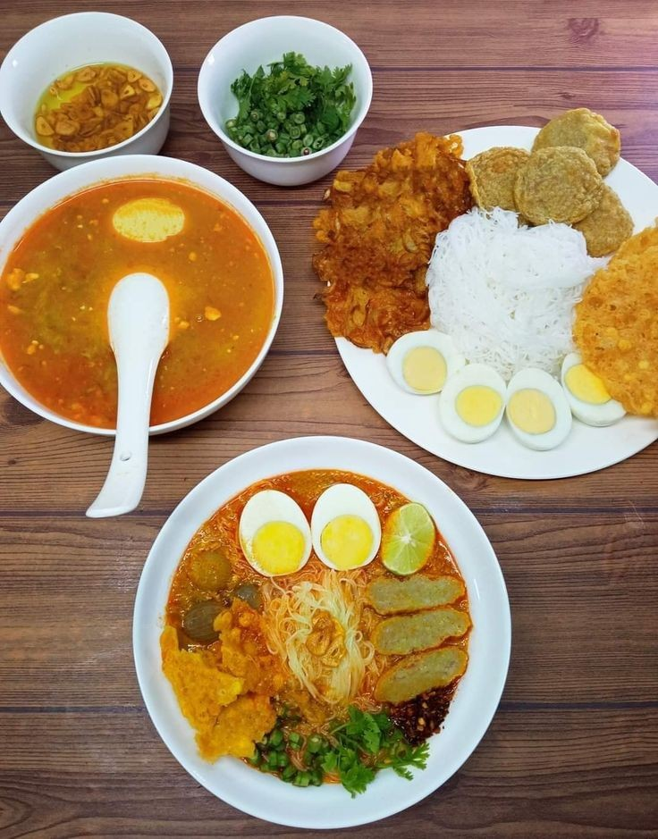
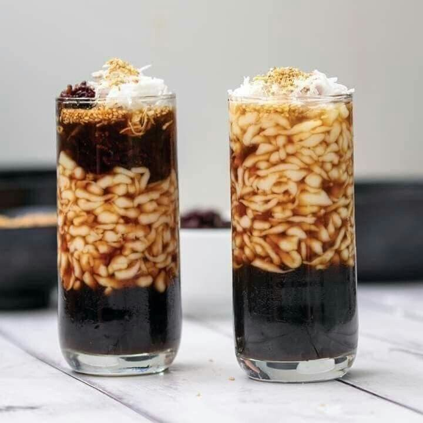
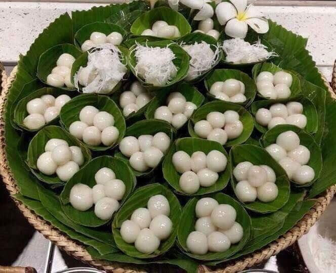
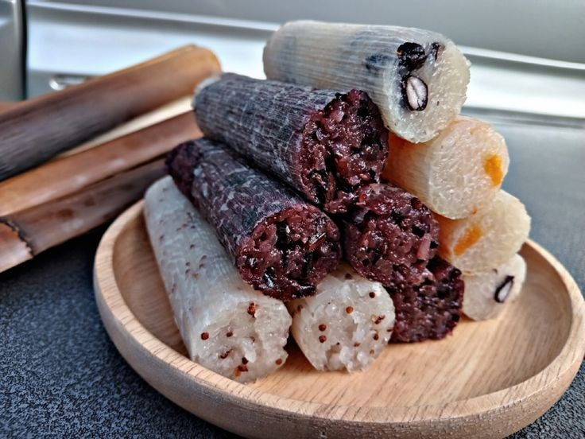
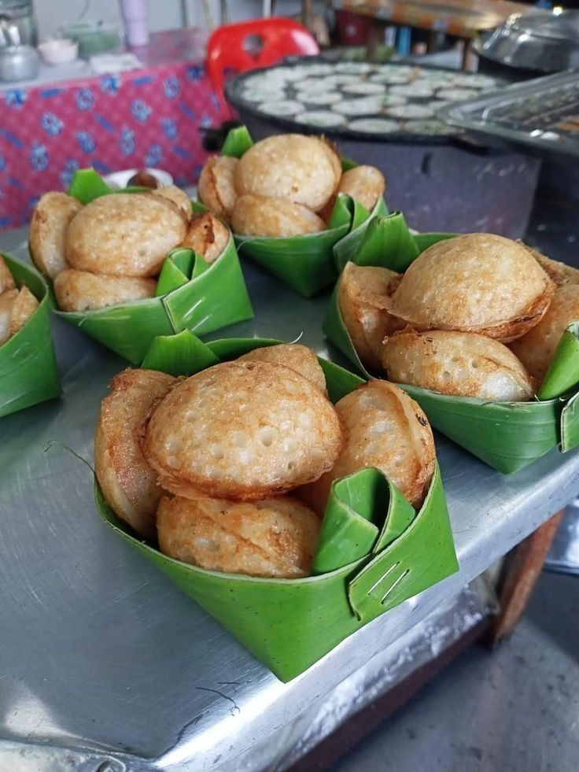
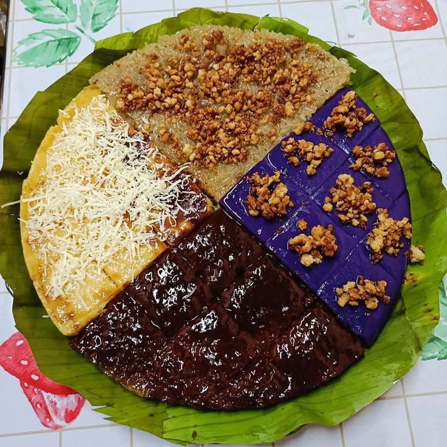
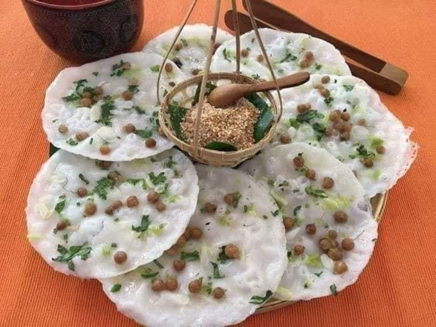

Taste the Flavor of Myanmar

Mohinga
Mohinga is Myanmar's most famous traditional breakfast dish.It consists of rice noodles served in a savory fish broth flavored with lemongrass,garlic, and banana stem. Ofthen topped with crispy fritters and boiled eggs, it's a comforting and flavorful meal loved by many across the country.

Montletsaung
Mont Let Saung is traditional Burmese dessert made with glutinous rice balls or jelly cubes,served in sweet coconut milk.It is often enjoyed cold,especially during the hot season and Thingyan(Myanmar's Water Festival).This refreshing treat is made with palm sugar syrup and a splash of salty coconut cream, creating a perfect balance of sweet and creamy flavors.

Mont Lone Yay Baw
Mont Lone Yay Baw is a traditional Burmese dessert commonly enjoyed during the Myanmar Water Festival (Thingyan).It is made from glutinous rice flour shaped into small balls and filled with jaggery(plam sugar).The rice balls are boiled in water until they float, then served with grated coconut on top.It's not delicious, but also part of a fun festival tradition where people sometimes play pranks by hiding chill peppers inside instead of sugar!

Lah Phat Thoke
Lahpet Thoke,or Burmese tea leaf salad, is a traditional Myanmar dish made fromm fermented tea leaves mixed with crispy beans, nuts, garlic, sesame seeds , and sometimes tomatoes or cabbage. It's a popular snack or side dish, often served during gatherings or special occasions.

Wah Kyet Tout
Wah Kyet Tout is a traditional Burmese dish made by stuffing bamboo shoots with seasoned fish of shrimp paste , garlic, chili, and spices.The stuffed shoots are then steamed or grilled. It's a popular side dish in rural Myanmar and known for its strong, savory flavor.

Mont Lin Maya
Mont Lin Maya is a traditional Burmese street snack or mont. The Burmese name literally means "husband and wife snack",and is also known as monk ok galay or mont maung hnan in Mawlamyine and Upper Myanmar.

Shwe Htamin
Shwe Htamin means "golden rice" in Burmese. It is a traditional Myanmar dessert made with glutinous rice cooked with coconut milk, sugar, and a pinch of turmeric to give it a golden color. It's usually topped with fried coconut shreds or crispy sesame seeds.This sweet and fragrant dish is often served during religious offerings , festive occasions, or as a special treat.

Shan Tofu Nway
Tofu Nway is a warm and creamy Burmese dish made from chickpea flour (not soybeans).The chickpea mixture is cooked until thick and smooth, then served warm with toppings like shredded chicken, noodlesm fried garlic , chili oil, and sometimes fresh herbs.It's a popular comfort food in Myanmar, especially in the Shan region.

A Kyaaw Sone
Akyaaw Sone is a traditional Burmese dish that consists of a mix of deep-fried vegetables,beans,onions, and greens.It is usually served with a tangy and spicy dipping sauce made from tamarind, chili, and roasted bean powder. This dish is commonly enjoyed as breakfast or dinner in Myanmar. It's simple to prepare, rich in flavor, and loved by people all voer the country.

Hta Mi Ne
Htamine is a traditional Burmese sweet rice dish, often prepared for religious or festive occasions.It's made from glutinous rice, bean powder, sugar,and coconut milk.With its rich aroma and soft, sweet flavor, it's best enjoyed warm_commonly served during morning ceremonies or offerings to monks.

Moke Pya Thalet
Moke Pya Thalet is a traditional Burmese pancake-like dessert made from rice flour, sugar,and coconut milk. It's cooked into thin,round shapes and often topped with grated coconut, banana slices,or beans. Soft and sweet, it has a pleasant aroma and is commonly enjoyed with tea in the morning or as a snack during the day.
Mont Si Kyaw
Mont Si Kyaw (Burmese Fried Dough) is a popular traditional snack often enjoyed as breakfast in Myanmar.It's made from fermented rice batter and deep-fried to golden brown, resulting in a crispy outside and soft inside.Typically served with jaggery syrup, sweet beans, or pickled bean sauce, it pairs especially well with a cup of hot Burmese tea.Simple yet flavorful,it's a favorite among locals.

Shan Noodles
Shan Noodles is a famous noodle dish from the Shan people of Myanmar, made with soft rice noodles, minced meat, tomato sauce, and garlic oil. Served dry or with light broth, it's flavorful, simple ,and loved across the country.

Shwe Kyi
Shwe Kyi is a traditional Burmese semolina cake made with sugar, oil, flour(often semolina or chickpea flour), and coconut milk. It's soft, slightly dense, and sweet, often topped with shredded coconut. Popular at festivals and ceremonies, it's a well-loved treat in Myanmar.